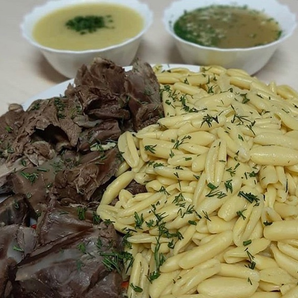

Zhizhig Galnash

Description
Zhizhig Galnash is a traditional dish of Chechen cuisine
(zhizhig is meat, and galnash is dumplings).
Ingredients
- chicken
- egg
- water
- flour
- black pepper
- salt
- garlic
- bay leaf
Steps
- Boil the chicken, add bay leaf
- When the chicken is ready, remove it from the broth and separate the meat from the bones
- Let's start making galnash. Pour flour into a bowl
- Add egg, salt, water. Mix the dough
- Form the dough into a sausage and cut it into strips
- From each piece we form a shell (press with three fingers and roll on the table)
- Divide the broth into two parts and pour a little for the sauce
- Add galnash to a saucepan with plenty of broth and cook for 20 minutes
- Sauce: Press the garlic through a press, add salt and pepper. Pour broth over everything
- When the galnash is ready, you need to place the chicken and galnash on a dish. Serve the sauce and bowls with broth separately
- Meat and dumplings dipped in spicy sauce